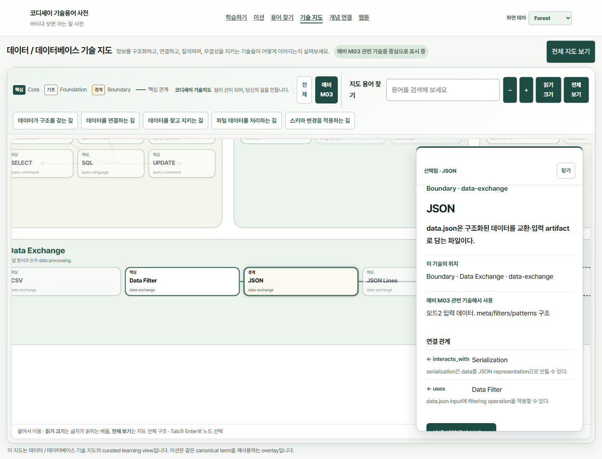
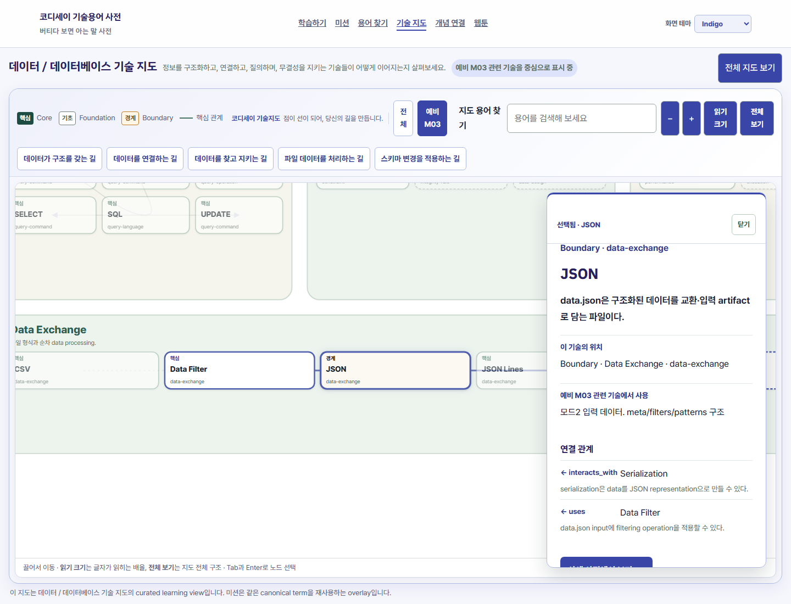
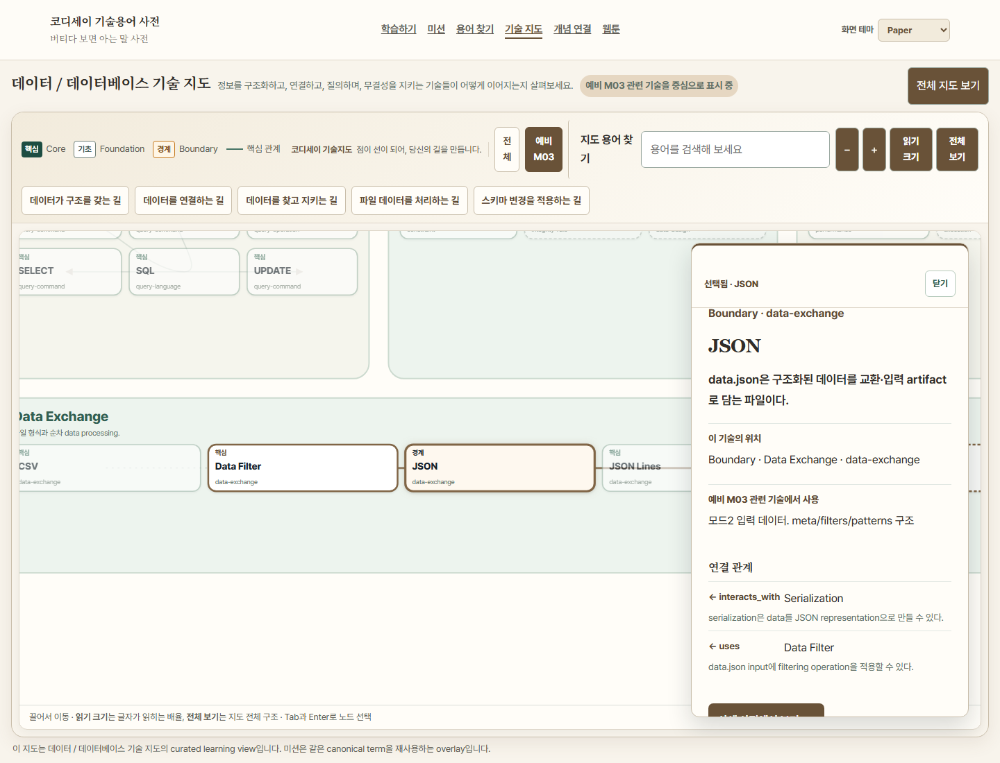
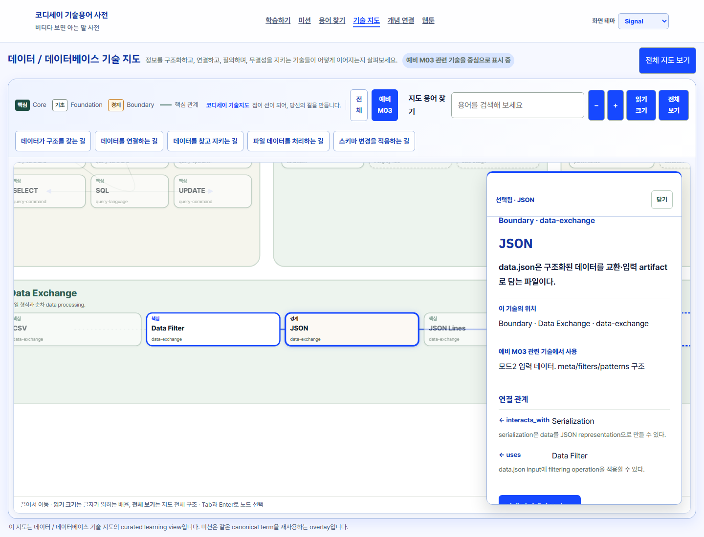

Technology Map — Theme Intensity Refinement
동일 Chromium viewport: 1440 × 1100 · 같은 Data / Database Map · 같은 preliminary-M03 overlay · 선택 node: JSON
http://127.0.0.1:6421/#/maps/data-database?mission=preliminary-m03 → 기본 상태
http://127.0.0.1:6421/#/maps/data-database?mission=preliminary-m03&term=json → selected node + drawer + highlighted relation
Forest
선택 전 JSON 선택 후
JSON 선택 후
Indigo
선택 전 JSON 선택 후
JSON 선택 후
Paper
선택 전 JSON 선택 후
JSON 선택 후
Signal
선택 전 JSON 선택 후
JSON 선택 후